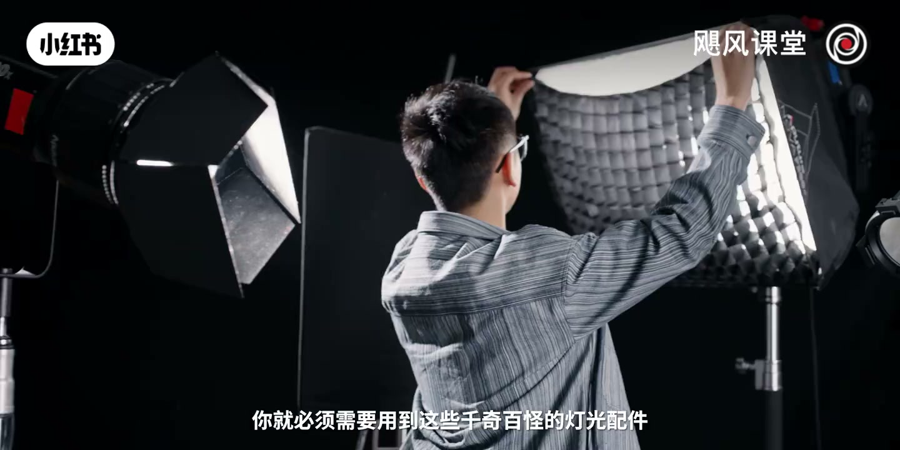
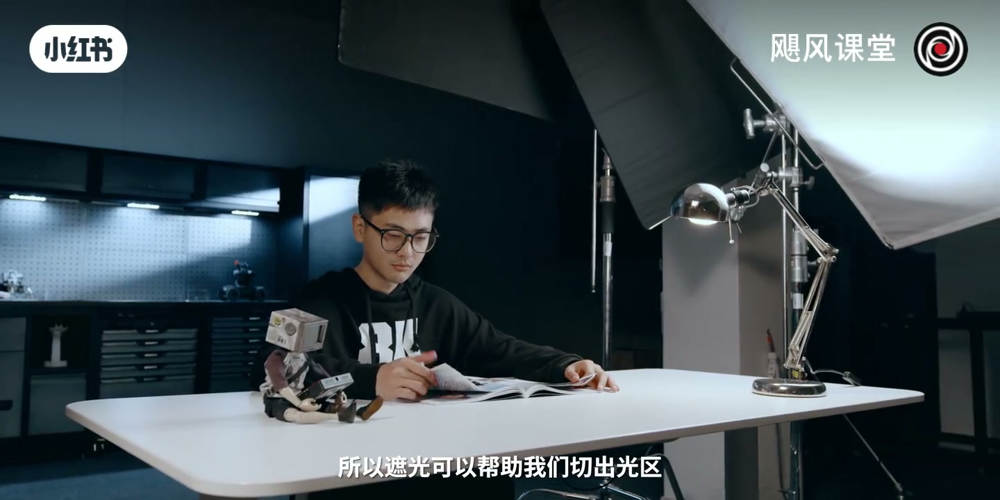
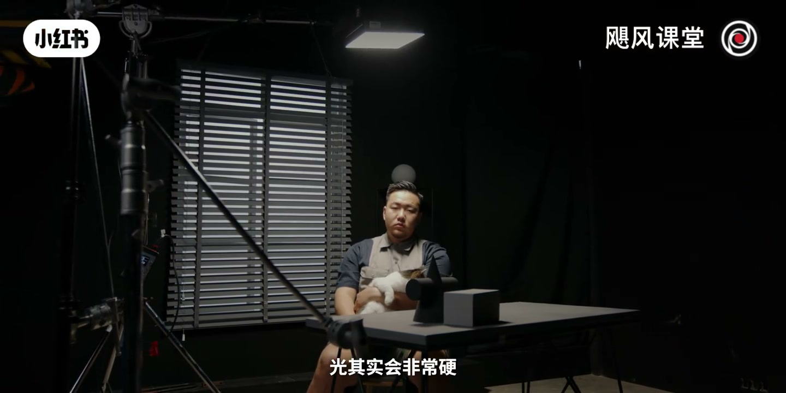
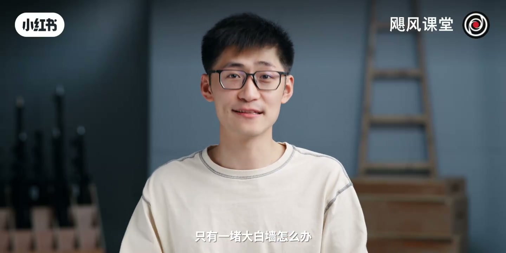

内容要点
「【灯光教程三】5个神器提升视频氛围感！」教程要点：好各位我是Tim → 欢迎收看本期视剧风 → 灯光这个东西真的特别爆炸 → 尤其是对于UP主来说；详见正文。
知识结构
好各位我是Tim
光和光之间也不再打架了
长得也很像放在鸡蛋里面的隔层
- 好各位我是Tim
- 欢迎收看本期视剧风
- 灯光这个东西真的特别爆炸
- 尤其是对于UP主来说
- 你看剧组里面只要你一吆喝
好各位我是Tim
00:00–01:36好各位我是Tim
好各位我是Tim；欢迎收看本期视剧风；灯光这个东西真的特别爆炸；尤其是对于UP主来说；你看剧组里面只要你一吆喝；立马就有三个灯光师；狠着人之帮你把灯架起来；还说老师你看看这个好不好；效率高得一匹；但如果你是个UP主；没错所有东西都得靠你自己；而且灯这个东西不是一打起来就可以用的；我们之前教程里也已经介绍了；打光的核心不是打；是控；你必须要理解控光的这个逻辑；学会切分光区；学会塑造不同形状的光；你才能得到所谓的电影感；或者说是高级感；而要得到这些效果；你就必须要用到这些千枝百冠的灯光配件；来实现你的创意需求；今天我们要做的就是和这些东西；来做个朋友；我们可以简单的把控光逻辑给分成两类；一个是把光变柔；这个我们在第一次详细讲解过；我也使用到反光板柔光罩柔光片这些配件；相信这部分你已经掌握的差不多了；如果没掌握的话赶快再回去看看；另外一种打光逻辑就是把光给遮住了；三分打光七分遮这句话已经被说烂了；我们还是来看点实际的案例会明显一点；比如说这样一个场景里；我需要有个背景光；然后有一个灯去打亮桌子上的书；然后另外还要有个灯来打亮我的人脸；再加点倒置灯点这个背景；这样几个灯一加如果你不控制的话；它们相互之间就产生了干扰；背景灯的光照效果现在被盖住了；色温也被混起来了；也叠出了很多奇怪的阴影；还没有了对比；非常的不好看；如果我们像这样；给这几个灯进行了适当的遮光和控光；你就可以看到


01:34–03:04光和光之间也不再打架了
光和光之间也不再打架了；阴影也变得比较干净；也各个区域能有不同的色温；所以遮光可以帮助我们切出光区；来凸显画面里的层次关系；让每一块区域都有个独立的；漂亮的光照效果；拍摄中用来遮光的配件其实有很多；我们常用的就有黑瓷；隔山 遮飞 闪光 剪影遮光板等等这些；他们各自有着不同的应用场景；但是如果我们一个个来讲；就会变得非常枯燥；所以我们想着；把它放到一个具体的场景里；来直观的呈现它们的作用；这里我们选用了；教父李柯里昂出场这个场景；因为这个打光太经典了；完全就是教科书级别的；单单这个镜头；我们就可以明显的看到；它有四个主要的光区；第一是人和桌面的这一块主光；第二是后面窗户里透进来的日光；第三是后面摆件上的轮廓光；还有第四；就是第二人身上被压暗的区域；那我们简单复刻一下这个场景；大概就是这样的；如果你把场景里的灯光都还原的话；那你的结果就是这样的；OK；那我们现在再开始来拆分光区；看看它们都用了什么灯光配件；首先最重要的就是主光；也就是最经典的教父光；从人物头顶上打下来；我们会看不见它的眼神；显得人非常的深沉神秘；那你可以看到；如果我们把灯直接垂直打下来；光其实会非常硬；而且把整个场景都打亮了；看上去效果会非常阴间；所以我们在灯上加了一个柔光箱；初步空出了一个柔和的光区；然后再捏上了一层隔山；就这种一格一格的网状布料


03:03–09:06长得也很像放在鸡蛋里面的隔层
长得也很像放在鸡蛋里面的隔层；所以也叫做蛋格；它能让光线不撕散；变得更加平行；但同时也会削弱一些光的强度；所以你需要一个比较强的灯；才能把它给支撑起来；这样一番操作之后；就显得不那么突兀了；那最后我们在这柔光箱周围；包了一圈黑布；这样的话可以进一步遮掉多余的光；让这个柔光被锁在人物；还有桌子上面；第二块区域是透过百叶窗的日光；这个很有意思；因为窗外并不是真的太阳光；而且我们用灯模拟出来的；我们用了一个带有窗的这么一个景片；这个其实在剧图里面经常见到；在这个假窗外面；我们用了一盏600D的LED灯；把亮度输出给拉满；看上去就像是一个真的太阳光一样；然后我们又在灯的前面；放了一个超级大的蝴蝶布来过柔；这样等到光线从百叶窗间隙；透过来的时候；它们就看起来已经足够柔和了；这个时候可能有朋友要问了；我要是没有这样的一扇假窗；只有一堵大白墙怎么办；那你好歹有个墙也不错了；如果你想徒手造景；其实也不是不可能；只需要这样一个东西；叫做捷影遮光板；它是一种聚光灯光路中的圆形插片；把它插在灯的前面；就可以打出这种百叶窗；树枝还有各种形状的这种阴影；用了它哪怕是一面白墙；也可以变得有丰富的细节和反差；捷影遮光板除了这种有小的金属插片；还有这种大的木质板；你可以直接架在一个魔术腿上；光打上去


口述/画面要点（40段）
结合 Whisper medium 与画面大字整理；专有名词已校对。
好各位我是Tim
欢迎收看本期视剧风
灯光这个东西真的特别爆炸
尤其是对于UP主来说
你看剧组里面只要你一吆喝
立马就有三个灯光师
狠着人之帮你把灯架起来
还说老师你看看这个好不好
效率高得一匹
但如果你是个UP主
没错所有东西都得靠你自己
而且灯这个东西不是一打起来就可以用的
我们之前教程里也已经介绍了
打光的核心不是打
是控
你必须要理解控光的这个逻辑
学会切分光区
学会塑造不同形状的光
你才能得到所谓的电影感
或者说是高级感
而要得到这些效果
你就必须要用到这些千枝百冠的灯光配件
来实现你的创意需求
今天我们要做的就是和这些东西
来做个朋友
我们可以简单的把控光逻辑给分成两类
一个是把光变柔
这个我们在第一次详细讲解过
我也使用到反光板柔光罩柔光片这些配件
相信这部分你已经掌握的差不多了
如果没掌握的话赶快再回去看看
另外一种打光逻辑就是把光给遮住了
三分打光七分遮这句话已经被说烂了
我们还是来看点实际的案例会明显一点
比如说这样一个场景里
我需要有个背景光
然后有一个灯去打亮桌子上的书
然后另外还要有个灯来打亮我的人脸
再加点倒置灯点这个背景
这样几个灯一加如果你不控制的话